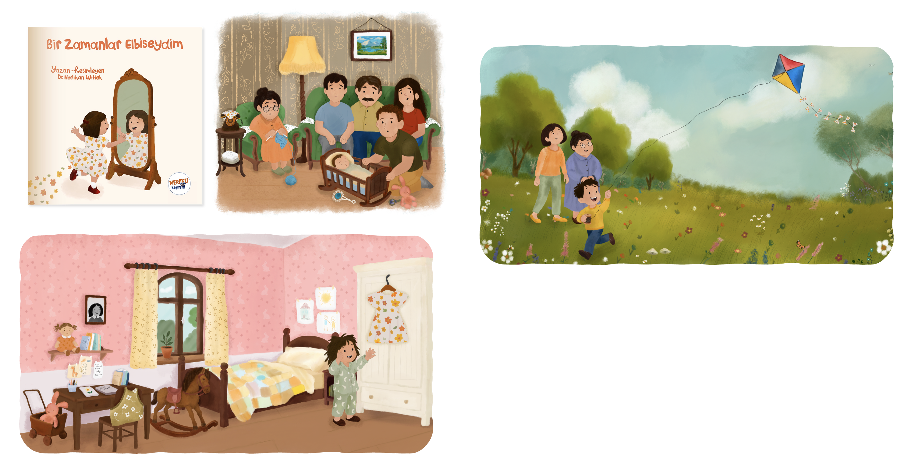
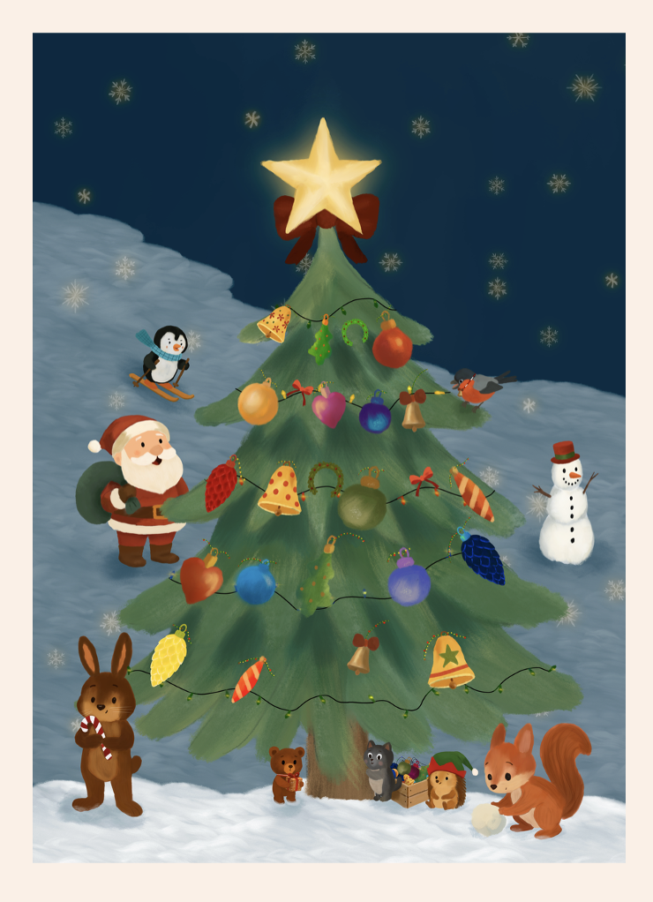
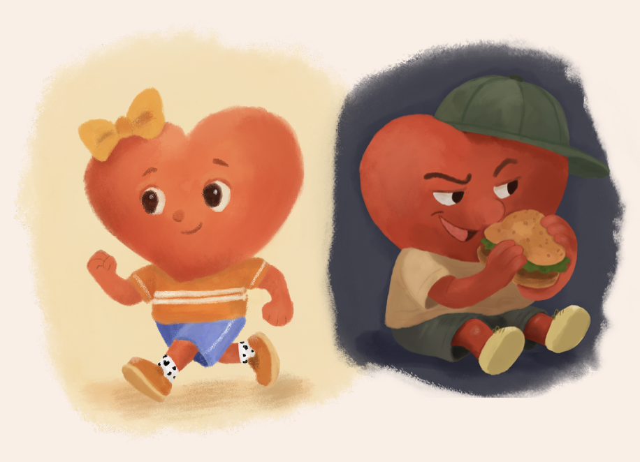
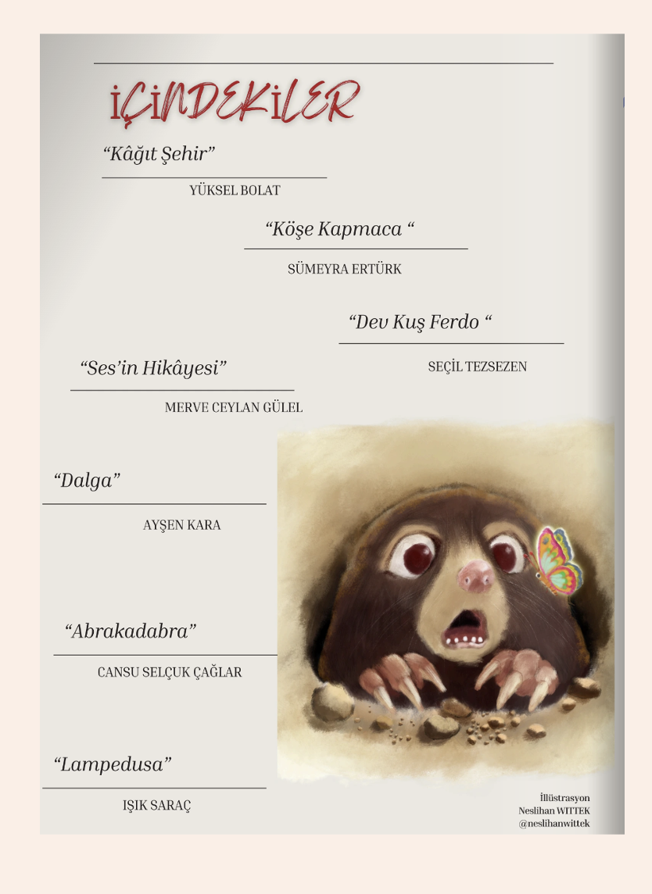

Illustrations from my first book, Bir Zamanlar Elbiseydim (Once I Was a Dress), written and illustrated by me and published in Türkiye by Meraklı Kaşifler Publishing. The book follows the changing life of a dress as it accompanies a family over the years.
Illustrations from my first book, Bir Zamanlar Elbiseydim (Once I Was a Dress), written and illustrated by me and published in Türkiye by Meraklı Kaşifler Publishing. The book follows the changing life of a dress as it accompanies a family over the years.

I designed an advent calendar for a private company in Berlin. Based on a provided story about a squirrel traveling through the forest to recover stolen gifts, I illustrated 24 story cards, 24 riddle cards, as well as matching stickers and a poster.

My character illustrations for the Big and Small Hearts Picture Book Illustration Competition, organized by Çocuk Kalp Vakfı in Turkey, were selected to be exhibited as part of the official exhibition.

My illustration Lonely Mole Lu was featured in Maya Magazine, an online magazine focused on art, literature, and children’s books for adults.